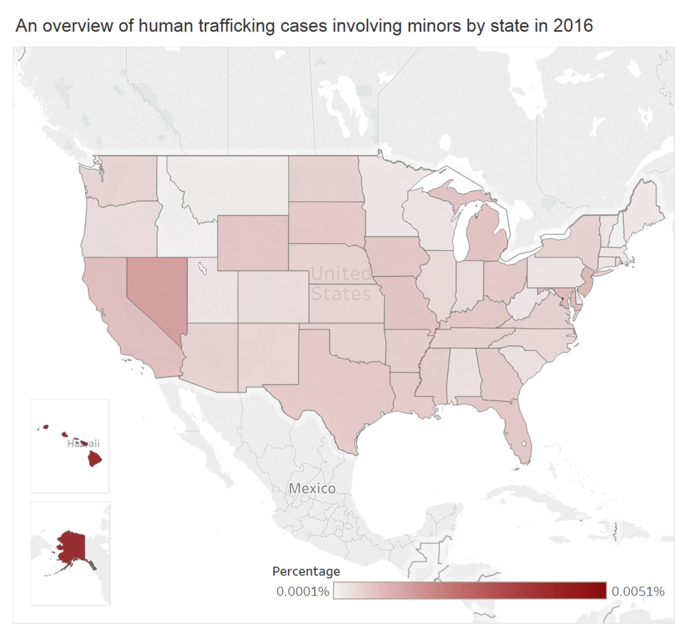

Human trafficking education for teenagers and parents is in need as cases keep increasing

As the number 17th state in the nation for the most human trafficking cases, Missouri held the record of 135 cases in 2016, almost doubling the number of cases in 2015, according to National Human Trafficking Hotline (NHTRC). The rapid increase reflects on not only the total number of cases, but also cases involving minors. I found this story while reviewing the data on NHTRC. Based on data research, cleaning and analysis, I further interviewed Detective Andrew Evans with the Boone County Sheriff's Department Cyber Crimes Task Force, and advocates, finding that the majority of human trafficking cases involving minors is directly connected to cybercrime. Then I wrote the story and visualized the data.